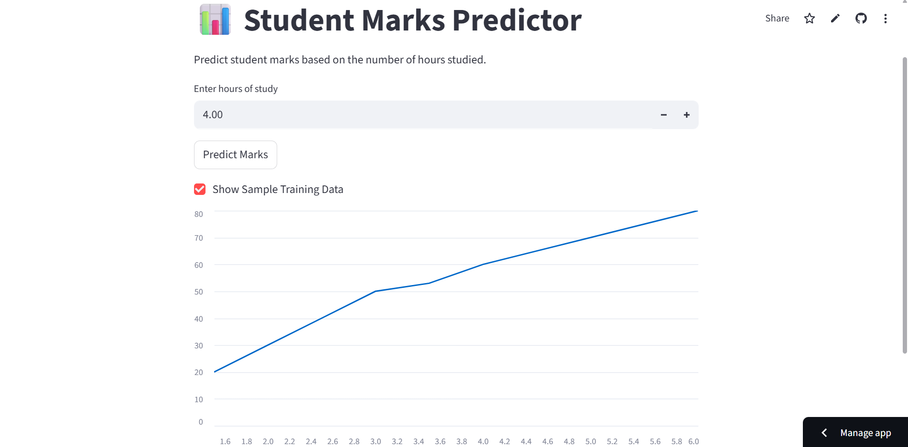
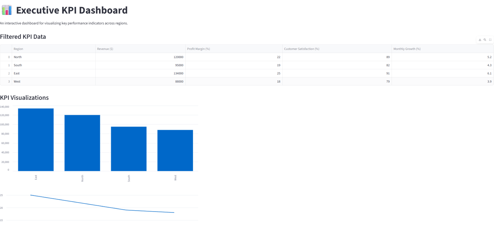

My Projects

Student Marks Predictor
ML model to predict student marks based on study hours.

Executive KPI Dashboard
Interactive dashboard showing business KPIs using Tableau and Python.

Missing Packages SQL Query
Used advanced SQL joins and conditions to identify undelivered packages from a logistics database.